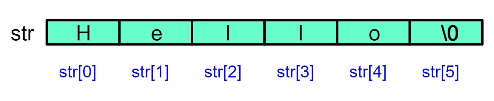
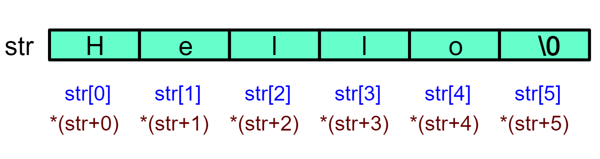
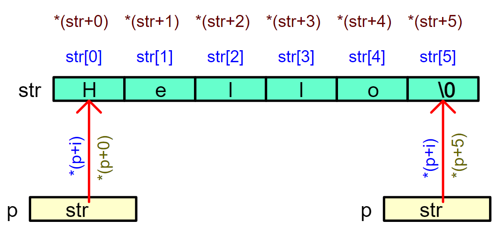
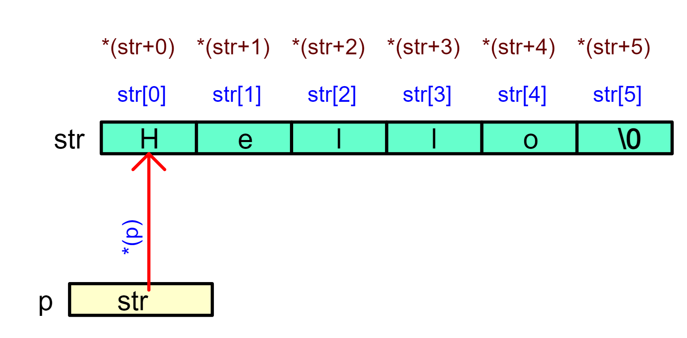

<!DOCTYPE lake>
<h1 data-lake-id="zkSBP" id="zkSBP"><span data-lake-id="u9dc2cfab" id="u9dc2cfab">1&gt; 遍历字符串</span></h1><h2 data-lake-id="xCKeV" id="xCKeV"><span data-lake-id="ue5270abe" id="ue5270abe">1.1&gt; 功能需求</span></h2><p data-lake-id="u53311e1f" id="u53311e1f"><span data-lake-id="u0b13ef44" id="u0b13ef44">顺序打印字符串的每个字符；</span></p><hr/><h2 data-lake-id="UHjrp" id="UHjrp"><span data-lake-id="u70747bbe" id="u70747bbe">1.2&gt; 方式1-数组下标</span></h2><span class="yuque-card-unsupported">[codeblock]</span><p data-lake-id="ua3f2cf4a" id="ua3f2cf4a"></p><ul list="u2202af76"><li data-lake-id="u599c1584" fid="u92ea1653" id="u599c1584"><code data-lake-id="u57e1cfc9" id="u57e1cfc9"><span data-lake-id="ub3e79689" id="ub3e79689">str[i]</span></code><span data-lake-id="u50e5aa0b" id="u50e5aa0b">最直观的数组访问方式；</span></li></ul><hr/><h2 data-lake-id="JyCoY" id="JyCoY"><span data-lake-id="u20c45248" id="u20c45248">1.3&gt; 方式2-数组名运算</span></h2><span class="yuque-card-unsupported">[codeblock]</span><p data-lake-id="u3cb31cc7" id="u3cb31cc7"></p><p data-lake-id="uaf607e9a" id="uaf607e9a"><span data-lake-id="u26be65b3" id="u26be65b3">🍉</span><span data-lake-id="ua9be5d72" id="ua9be5d72">编译器会自动将</span><code data-lake-id="u890a27f5" id="u890a27f5"><span data-lake-id="u68715b7b" id="u68715b7b">str[i]</span></code><span data-lake-id="uefb76a49" id="uefb76a49"> 转换为</span><code data-lake-id="uf764c227" id="uf764c227"><strong><span data-lake-id="ud4247e47" id="ud4247e47" style="color: #DF2A3F">*(str + i)</span></strong></code><span data-lake-id="u7224bf6a" id="u7224bf6a">指针运算</span></p><hr/><h2 data-lake-id="P3jeJ" id="P3jeJ"><span data-lake-id="u6905a683" id="u6905a683">1.4&gt; 方式3-指针运算</span></h2><span class="yuque-card-unsupported">[codeblock]</span><p data-lake-id="u77f99d39" id="u77f99d39"></p><p data-lake-id="ue8677ccc" id="ue8677ccc"><span data-lake-id="u7369fe22" id="u7369fe22">❓</span><span data-lake-id="u066177a7" id="u066177a7">与方式2-数组名运算类似，但使用了额外的指针变量；</span></p><hr/><span class="yuque-card-unsupported">[codeblock]</span><p data-lake-id="u4cc3f63a" id="u4cc3f63a"></p><p data-lake-id="u14f3f9a7" id="u14f3f9a7"><span data-lake-id="ub8349a10" id="ub8349a10">🐧</span><span data-lake-id="uc80ea61f" id="uc80ea61f">不需要维护索引变量</span><code data-lake-id="u684c01a4" id="u684c01a4"><span data-lake-id="u44c3e0dd" id="u44c3e0dd" style="color: #DF2A3F">i</span></code><span data-lake-id="u5b49b2ef" id="u5b49b2ef">；</span></p><p data-lake-id="u0ca62c40" id="u0ca62c40"><span data-lake-id="u0073f385" id="u0073f385">🐧</span><span data-lake-id="u162964ea" id="u162964ea">直接移动指针，效率更高；</span></p><hr/><span class="yuque-card-unsupported">[codeblock]</span><p data-lake-id="u7e8ffcca" id="u7e8ffcca"><span data-lake-id="uc565f320" id="uc565f320">🚀</span><span data-lake-id="u03f3a230" id="u03f3a230"> 最佳实践：</span></p><p data-lake-id="u0cca0e4e" id="u0cca0e4e"><span data-lake-id="u8f680b85" id="u8f680b85">如果只是 顺序访问数组，优先用 </span><code data-lake-id="u99a79712" id="u99a79712"><span data-lake-id="u3f7c51a5" id="u3f7c51a5">p++</span></code><span data-lake-id="u0b4d4758" id="u0b4d4758">（更高效、更简洁）。</span></p><p data-lake-id="u86b869a0" id="u86b869a0"><span data-lake-id="u55299095" id="u55299095">如果需要 随机访问（如 </span><code data-lake-id="uc4a750d3" id="uc4a750d3"><span data-lake-id="u7f48f6d3" id="u7f48f6d3">str[i]</span></code><span data-lake-id="u9d063652" id="u9d063652">），再用索引方式。</span></p><hr/><h2 data-lake-id="KyrvM" id="KyrvM"><span data-lake-id="ud645ecda" id="ud645ecda">1.5&gt; 封装函数</span></h2><span class="yuque-card-unsupported">[codeblock]</span><p data-lake-id="uee5b033b" id="uee5b033b"><span data-lake-id="u09750c26" id="u09750c26">🏯</span><span data-lake-id="uf17ef340" id="uf17ef340">工程实践：在真实项目中，代码通常需要复用，封装成函数更合理。</span></p><p data-lake-id="u6ea31f0c" id="u6ea31f0c"><span data-lake-id="u8cb54318" id="u8cb54318">🚄</span><span data-lake-id="u43d5b4bf" id="u43d5b4bf">可读性：main 函数更简洁，核心逻辑放在 </span><code data-lake-id="u54f3e44e" id="u54f3e44e"><span data-lake-id="u6d67c17f" id="u6d67c17f">str_print() </span></code><span data-lake-id="ufea69ded" id="ufea69ded">里。</span></p><hr/><h1 data-lake-id="qvSj6" id="qvSj6"><span data-lake-id="u7fb68ea2" id="u7fb68ea2">🐻</span><span data-lake-id="u5d4b164f" id="u5d4b164f">实践练习</span></h1><p data-lake-id="uc0592ef0" id="uc0592ef0"><span data-lake-id="u8b238fcf" id="u8b238fcf">实现一个函数 </span><code data-lake-id="u975127bd" id="u975127bd"><span data-lake-id="udb1710dd" id="udb1710dd" style="color: #DF2A3F">my_strlen</span></code><span data-lake-id="ua4180623" id="ua4180623">，用于计算给定字符串的长度（不包含结尾的 '\0' 字符）。</span></p><span class="yuque-card-unsupported">[codeblock]</span><p data-lake-id="u067683fa" id="u067683fa"><span data-lake-id="u9bb68991" id="u9bb68991">重点：画出内存示意图；</span></p><hr/><h1 data-lake-id="HCQyl" id="HCQyl"><span data-lake-id="u40031a77" id="u40031a77">2&gt; 字符替换</span></h1><h2 data-lake-id="gpVwz" id="gpVwz"><span data-lake-id="u4234d8f4" id="u4234d8f4">2.1&gt; 功能需求</span></h2><p data-lake-id="ucd6d4d82" id="ucd6d4d82"><span data-lake-id="u2c33f3c4" id="u2c33f3c4">我们需要把用户输入的密码中的特定字符替换成星号*，实现简单的隐私保护。</span></p><span class="yuque-card-unsupported">[codeblock]</span><hr/><h2 data-lake-id="WUFVr" id="WUFVr"><span data-lake-id="u77c94ef8" id="u77c94ef8">2.2&gt; 方式1-数组下标</span></h2><span class="yuque-card-unsupported">[codeblock]</span><hr/><h2 data-lake-id="fxcgn" id="fxcgn"><span data-lake-id="u90eb8f16" id="u90eb8f16">2.3&gt; 方式2-指针运算</span></h2><span class="yuque-card-unsupported">[codeblock]</span><hr/><h2 data-lake-id="ElHm5" id="ElHm5"><span data-lake-id="uc8911a1d" id="uc8911a1d">2.4&gt; 封装函数</span></h2><span class="yuque-card-unsupported">[codeblock]</span><p data-lake-id="uaae5c78b" id="uaae5c78b"><span data-lake-id="u68509a4b" id="u68509a4b">❓</span><span data-lake-id="ub31dfce1" id="ub31dfce1">如果需要替换其他字符（如 </span><code data-lake-id="uada22c4d" id="uada22c4d"><span data-lake-id="uecb6fdbd" id="uecb6fdbd">'o'</span></code><span data-lake-id="u7152e6c3" id="u7152e6c3"> 或 </span><code data-lake-id="u9d1e0721" id="u9d1e0721"><span data-lake-id="u452d7a05" id="u452d7a05">'8'</span></code><span data-lake-id="uf612c113" id="uf612c113">），必须修改函数内部代码，不够灵活;</span></p><hr/><span class="yuque-card-unsupported">[codeblock]</span><p data-lake-id="ucbb49a36" id="ucbb49a36"><span data-lake-id="u260b9fd3" id="u260b9fd3">🎯</span><span data-lake-id="u269bd4a9" id="u269bd4a9">更符合编程规范：通常来说，函数应该尽量通用，而不是写死逻辑。</span></p><hr/><h1 data-lake-id="W7f1b" id="W7f1b"><span data-lake-id="u1e8ecd2d" id="u1e8ecd2d">🐻</span><span data-lake-id="u09188946" id="u09188946">实践练习</span></h1><p data-lake-id="ue8c66137" id="ue8c66137"><span class="lake-fontsize-12" data-lake-id="u661fc17a" id="u661fc17a">练习1</span><span data-lake-id="ue3d3548c" id="ue3d3548c">：实现一个字符串拷贝函数 </span><code data-lake-id="uf386c464" id="uf386c464"><span data-lake-id="ub8f9ffde" id="ub8f9ffde">my_strcpy</span></code><span data-lake-id="u5941668e" id="u5941668e">，将源字符串 src 复制到目标字符串 dest 中。</span></p><span class="yuque-card-unsupported">[codeblock]</span><hr/><p data-lake-id="uc41a3932" id="uc41a3932"><span data-lake-id="ub599ca73" id="ub599ca73">练习2：</span><strong><span data-lake-id="ua11aeac4" id="ua11aeac4" style="color: #601BDE">查阅</span></strong><span data-lake-id="ub126478a" id="ub126478a">资料，了解标准库</span><code data-lake-id="ue61ace68" id="ue61ace68"><span data-lake-id="u883c9b80" id="u883c9b80">&lt;string.h&gt;</span></code><span data-lake-id="u3b7d5ab2" id="u3b7d5ab2">中常用函数，并编写测试代码，验证其功能</span></p><span class="yuque-card-unsupported">[codeblock]</span><p data-lake-id="u9085c158" id="u9085c158"><span data-lake-id="u6a90c3ec" id="u6a90c3ec">示例：</span><code data-lake-id="u01086d92" id="u01086d92"><span data-lake-id="u884c4d01" id="u884c4d01">strlen()</span></code><span data-lake-id="u38b67212" id="u38b67212"> 验证</span></p><span class="yuque-card-unsupported">[codeblock]</span>